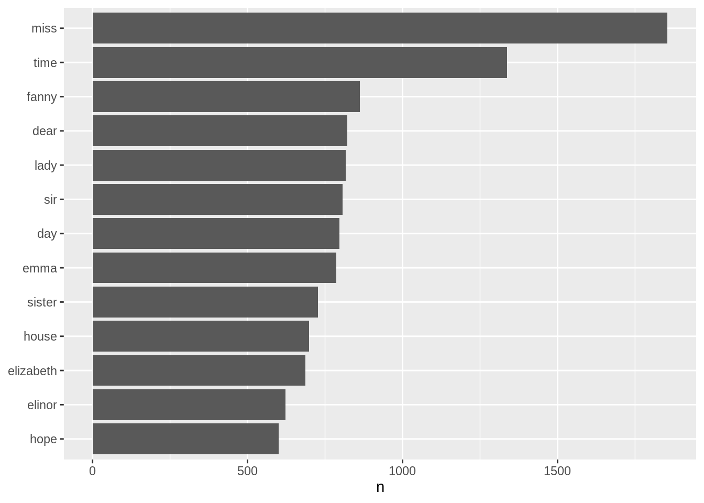

1.3 Example 1: Tidying the works of Jane Austen
Loading the texts and converting it into a tibble data format:
library(janeaustenr)
library(dplyr)
library(stringr)
original_books <- austen_books() %>%
group_by(book) %>%
mutate(linenumber = row_number(),
chapter = cumsum(str_detect(text,
regex("^chapter [\\divxlc]",
ignore_case = TRUE)))) %>%
ungroup()
original_books## # A tibble: 73,422 × 4
## text book linenumber chapter
## <chr> <fct> <int> <int>
## 1 "SENSE AND SENSIBILITY" Sense & Sensibility 1 0
## 2 "" Sense & Sensibility 2 0
## 3 "by Jane Austen" Sense & Sensibility 3 0
## 4 "" Sense & Sensibility 4 0
## 5 "(1811)" Sense & Sensibility 5 0
## 6 "" Sense & Sensibility 6 0
## 7 "" Sense & Sensibility 7 0
## 8 "" Sense & Sensibility 8 0
## 9 "" Sense & Sensibility 9 0
## 10 "CHAPTER 1" Sense & Sensibility 10 1
## # … with 73,412 more rowsRestructuring the one-token-per-row tidytext data format:
## # A tibble: 725,055 × 4
## book linenumber chapter word
## <fct> <int> <int> <chr>
## 1 Sense & Sensibility 1 0 sense
## 2 Sense & Sensibility 1 0 and
## 3 Sense & Sensibility 1 0 sensibility
## 4 Sense & Sensibility 3 0 by
## 5 Sense & Sensibility 3 0 jane
## 6 Sense & Sensibility 3 0 austen
## 7 Sense & Sensibility 5 0 1811
## 8 Sense & Sensibility 10 1 chapter
## 9 Sense & Sensibility 10 1 1
## 10 Sense & Sensibility 13 1 the
## # … with 725,045 more rowsRemoving the stopwords:
Often in text analysis, we will want to remove stop words; stop words are words that are not useful for an analysis, typically extremely common words such as “the”, “of”, “to”, and so forth in English. We can remove stop words (kept in the tidytext dataset stop_words) with an anti_join().
## Joining, by = "word"We can use them all together, as we have here, or filter() to only use one set of stop words if that is more appropriate for a certain analysis.
Using the dplyr::count() to summarize the word frequency results as a tidy data table:
## # A tibble: 13,914 × 2
## word n
## <chr> <int>
## 1 miss 1855
## 2 time 1337
## 3 fanny 862
## 4 dear 822
## 5 lady 817
## 6 sir 806
## 7 day 797
## 8 emma 787
## 9 sister 727
## 10 house 699
## # … with 13,904 more rowsVisualizing the word frequency results as a plot:
library(ggplot2)
tidy_books %>%
count(word, sort = TRUE) %>%
filter(n > 600) %>%
mutate(word = reorder(word, n)) %>%
ggplot(aes(n, word)) +
geom_col() +
labs(y = NULL)